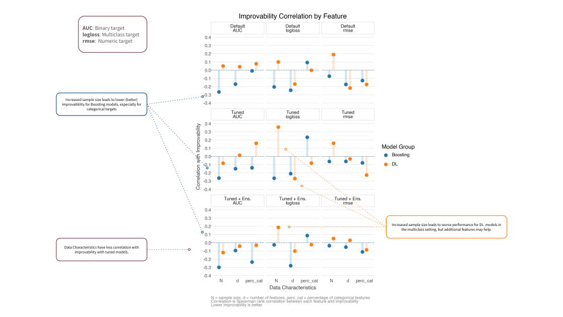

It’s been nearly four years since I first summarized the state of deep learning (DL) for tabular data, and about three years since my follow-up post. Back then, the verdict was pretty clear: for most tabular data scenarios, especially those with heterogeneous features and even very large sample sizes, gradient boosting methods like XGBoost, LightGBM, and CatBoost, were still the pragmatic and performant choice. Complex DL architectures like TabNet and even transformer-based models struggled to consistently outperform these boosting approaches, which meant they weren’t really viable options for most practitioners or production.
The question now is: has anything fundamentally changed?
Let’s see if the landscape has shifted, or if we’re still in “XGBoost is all you need” territory.
Quick Take (if you’re in a hurry)
Key takeaways:
Several new deep learning models show impressive performance compared to boosting, but context still matters (more on this below)
It’s significantly easier to implement and experiment with modern tabular DL methods
Foundation models for tabular data are emerging and have had success, but it’s a bit early to say how transformative they’ll be in practice yet
TabArena has created a more rigorous benchmarking environment with standardized datasets and evaluation protocols
For most practitioners: you’d still do very well with boosting, especially for heterogeneous data and with limited time/resources. However, you should start to consider DL methods if predictive performance is critical and you have the resources to invest in experimentation.
Now, let’s dig into the details.
What’s Changed: Benchmarking and Accessibility
Better Evaluation Standards
One major improvement is the emergence of more rigorous benchmarking. TabArena (leaderboard) provides standardized datasets, consistent evaluation metrics, and transparency in preprocessing—addressing the apples-to-oranges comparison problems from earlier papers.
A curated set of tabular datasets with standardized train/test splits
Consistent evaluation metrics across different model types
A public leaderboard tracking model performance
Transparency in preprocessing and hyperparameter choices
Focus on heterogeneous datasets that better reflect real-world tabular data scenarios
Use of elo-style model ranking for easier model comparisons
TabArena addresses one of the major frustrations from my previous post summaries: papers often used different datasets, preprocessing pipelines, and hyperparameter tuning budgets, making fair comparisons nearly impossible. They also often focused primarily on very homogeneous data, which isn’t representative of typical real-world tabular data, and sometimes only classification targets. This is a far better assessment, and gives us more confidence when comparing methods.
Current Leaderboard Landscape
As of February 2026, the TabArena leaderboard shows some interesting patterns:
Figure 1: TabArena Leaderboard
The key insight from these benchmarks is that some newer DL models are not only competitive with boosting, a few typically win in head-to-head comparisons against boosting models. For example, the top 4 DL models win > 50% of the time against LGBM, XGB, and CatBost.
Figure 2: Head to Head
Practical Implementation Tools
The even bigger story is accessibility. Modern tools make it trivial to try these methods, so let’s try it out for ourselves!
Making Tabular DL Practical
Using pytabkit
pytabkit provides implementations of state-of-the-art tabular DL models with:
Optimized hyperparameter defaults based on extensive benchmarking
Unified API similar to scikit-learn
Automated preprocessing for heterogeneous data
Support for both classification and regression
This is significant because one of the historical barriers to using tabular DL was implementation difficulty. While boosting modules were already easy to add to typical ML pipelines and often worked well out of the box, DL models often required custom code, careful tuning, and extensive experimentation to get good results.
Let’s see it in action with a simple example. We’ll generate a synthetic dataset with mixed numeric and categorical features, then train a RealMLP model and compare it to an XGBoost baseline.
Show the code: Create Classification Data
# Example pytabkit usagefrom pytabkit import RealMLP_TD_Classifierfrom sklearn.model_selection import train_test_splitfrom sklearn.datasets import make_classificationfrom sklearn.metrics import accuracy_score, roc_auc_score, logloss, f1_scorefrom sklearn.model_selection import StratifiedKFoldimport pandas as pdimport numpy as npimport string# Generate a classification datasetX, y = make_classification( n_samples=5000, n_features=15, n_informative=8, n_redundant=3, n_classes=2, random_state=42,# make it a more difficult problem flip_y=0.2, class_sep=0.1, n_clusters_per_class=2,)# Convert to DataFrame for easier handlingfeature_names = [f"Feature_{i}"for i inrange(X.shape[1])]X = pd.DataFrame(X, columns=feature_names)# Add three categorical columns with 3, 5, and 12 categories, using letters as group namesX['Cat_3'] = pd.cut(X['Feature_0'], bins=3, labels=list(string.ascii_uppercase[:3])).astype('category')X['Cat_5'] = pd.cut(X['Feature_1'], bins=5, labels=list(string.ascii_uppercase[:5])).astype('category')X['Cat_12'] = pd.cut(X['Feature_2'], bins=12, labels=list(string.ascii_uppercase[:12])).astype('category')# Use a single train/test splitX_train, X_test, y_train, y_test = train_test_split(X, y, test_size=0.2, random_state=42, stratify=y)# Example CV splitter for pytabkit (if needed)cv_splitter = StratifiedKFold(n_splits=5, shuffle=True, random_state=42)# Get train/validation indices from the splitter# X_val, y_val = X_train.iloc[val_idx], y_train[val_idx]val_idxs_list = [val_idxs for train_idxs, val_idxs in cv_splitter.split(X_train, y_train)]# make sure that each validation set has the same length, so we can exploit vectorizationmax_len =max([len(val_idxs) for val_idxs in val_idxs_list])val_idxs_list = [val_idxs[:max_len] for val_idxs in val_idxs_list]val_idxs = np.asarray(val_idxs_list)print(f"Train size: {X_train.shape[0]}, Test size: {X_test.shape[0]}, Baselin rate: {np.mean(y):.2f}")
With data in hand, we can train a RealMLP model.
# | label: Train RealMLPmodel_realmmlp = RealMLP_TD_Classifier( device='mps', random_state=0, n_cv=5, val_metric_name='cross_entropy', verbosity=2, # will show per epoch loss# example modifications# n_refit=1,# n_repeats=1,# n_epochs=256,# batch_size=256,# hidden_sizes=[256] * 3,# lr=0.04,)model_realmmlp.fit( X_train, y_train, val_idxs=val_idxs, cat_col_names=['Cat_3', 'Cat_5', 'Cat_12'])
On an old Macbook M1 this ran just at around one minute with the default 256 epochs, and it doesn’t look like we needed that many. We definitely don’t need to sweat that kind of time on a dataset of this size regardless. Now let’s evaluate the model on the test set. Note that inference is near instant for this model.
Compare to XGBoost. With pytabkit we can use defaults based on models used across a variety of data sets (TD = tuned defaults), making it easy to get started very well. Model training with data of this size took just a couple seconds.
While boosting appears to do fine, in very little time we can get not only competitive but even better results with a modern DL approach. Of course, this is just one (simulated) dataset that shows how easy it is, but the TabArena results suggest this generalizes well beyond also. There we see that RealMLP is one of the top performers across a variety of datasets, and beats XGBoost in head-to-head comparisons more than 75% of the time (Figure 2).
Even Easier: AutoGluon
AutoGluon is a popular AutoML library that has recently added support for some of the newer tabular DL models, including many of those in pytabkit. This means you can get competitive performance with minimal code and tuning for multiple models, whether boosting, DL, or other approaches. Here we use 3 DL models and 3 boosting models1.
from autogluon.tabular import TabularDataset, TabularPredictorX_train_ag = TabularDataset(X_train.assign(target=y_train))X_test_ag = TabularDataset(X_test)model_ag = ( TabularPredictor(label='target', eval_metric='logloss') .fit( X_train_ag, num_bag_folds=5,# num_bag_sets=1,# num_stack_levels=0,# you can set these and/or let AutoGluon search hyperparameters={'REALTABPFN-V2.5': {'device': 'mps'},'REALMLP': {},'TABM': {},'GBM': {},'XGB': {},'CAT': {}, } ))
One very nice aspect of AutoGluon is its easily accesible ‘leaderboard’ so you can compare and contrast your models immediately. The best non-ensemble model was RealTabPFN-v2.5. It also makes very clear just how much more time it took to get the best performance (in seconds), which is a lot. Whether it’s worth it will depend on your context.
Now let’s compare all our approaches. Standard XGB with tuned defaults did pretty well, but our RealMLP model did better, and AutoGluon did even better still in terms of loss.
Model
Accuracy
ROC AUC
Log Loss
F1 Score
XGB
0.752
0.824
0.567
0.750
RealMLP
0.772
0.838
0.505
0.767
AutoGluon
0.798
0.865
0.464
0.793
What Affects Performance?
The performance of any model on tabular data can be influenced by several factors:
Dataset characteristics: The number of samples, features, and the degree of heterogeneity can impact which model performs best. DL models may excel with larger datasets and more complex feature interactions, while boosting methods may perform better with smaller datasets or more homogeneous features.
Hyperparameter tuning: DL models often require more careful tuning of hyperparameters (e.g., learning rate, architecture, batch size) compared to boosting methods, which can be more robust to default settings. However, tools like pytabkit and AutoGluon are making this easier by providing optimized defaults and automated tuning.
Computational resources: DL models typically require more computational power and longer training times to get that better performance, especially for larger datasets and more complex architectures. Boosting methods are generally faster to train and can be more efficient for smaller datasets or when resources are limited.
Ensembling: Combining multiple models can often improve performance, but the benefits may vary depending on the dataset and the models being combined. Some DL models may benefit more from ensembling than boosting methods, but this can also increase training time and complexity.
TabArena provides the following plot. On the y-axis, which is improvability or is how much better the ‘best’ model is relative to the one in question. If your model did just as well as the best improvability would be 0, as there would be no room for improvement. The x-axis is difficult to parse because it’s a combination of dataset characteristics like sample size and number of features. Plus the display choices make it hard to see the relationship between different models. TabPFN doesn’t gain much with increased training time, but that is partly because it does so well to begin with. Furthermore, we may see better improvement if that training time is due to increased features or increased samples, but it’s not clear from that plot. Note that each point represents a larger ensemble of different configurations of the model from 1 parameter set on the left to 201 on the right, so the training time is the median time during that training process2.
Figure 4: Improvability vs. Train Time
The takeaway from the plot is that deep learning has officially caught up to gradient-boosted trees on tabular data, but claiming that top spot requires a massive “training tax”—specifically, ensembling dozens of configurations to squeak past standard baselines. While models like RealMLP offer the absolute highest accuracy if you have unlimited resources, trees like CatBoost remain the practical choice, delivering stable, near-peak performance at a fraction of the compute and inference cost. Unless you are chasing the final fraction of a percent in accuracy at any price, traditional tree-based models are still the most efficient tool for the job.
If we actually break out the reported relationships in the TabArena paper, a couple things become more clear. I looked at the top 4 DL models and their performance relative to standard 3 boosting methods, and how sample size, number of features, and heterogeneity (based on percentage of categorical features) relate to improvability3. I found that:
Increased sample and feature set is correlated with better performance for boosting, but this relationship seems to be mostly for categorical targets and/or the default parameters.
The percentage of categorical features seems a mixed bag for boosting and DL models, but may help boosting methods for binary and numeric targets. For DL models this seems to be more helpful for numeric targets, but not binary or multiclass.
For multiclass targets, increased feature set helps DL models.
Default settings benefit more from increased data, likely because the tuned/ensembled models are already doing quite well in the same settings, so there’s less room for improvement.

Figure 5: Improvability vs. Data Characteristics
How long does it take?
When considering whether to use DL methods for tabular data, training and inference time are important factors. While DL models can offer performance improvements, they require more computational resources and longer training times compared to boosting methods. This is especially true for larger datasets and more complex architectures.
In our example, the RealMLP model took about one minute to train on a small dataset with an old M1 chip, while XGBoost took just a couple seconds. The AutoGluon approach had several models to work through and then combine, but even then was less than 10 minutes. This sort of difference is very manageable for many applications, especially if you’re looking for that extra bit of performance and have the resources to invest in tuning. Autogluon makes it even easier to implement multiple models quickly, with ensemble results that will often be the best you’ll get.
Of course, with larger data comes more pronounced gaps. Some models like Tab-PFN will not even be usuable with 100k or more, and others will just not be viable for the data context. For some, they may already do quite well in smaller data settings (like Tab-PFN), while others may generally do better with more data/ensembling.
For DL models and tabular data, the ease at which we can implement these models means it’s worth trying them out on your own data, especially if you’re already using boosting methods and want to see if you can eke out some extra performance.
df_tabarena_paper_metrics = pd.read_csv('posts/2025-03-01-dl-for-tabular-foundational/dataset_metric_summary.csv', na_values=['-'])df_tabarena_paper_datasets = pd.read_csv('posts/2025-03-01-dl-for-tabular-foundational/dataset_summary.csv', na_values=['-'])import polars as plimport polars.selectors as csdf_tabarena_paper_metrics_score_only = pl.from_pandas(df_tabarena_paper_metrics)import re# Identify columns that start with 'RF:AutoGluon'cols = df_tabarena_paper_metrics_score_only[:, 'RF':'AutoGluon'].columnsdf_tabarena_paper_metrics_score_only = df_tabarena_paper_metrics_score_only.with_columns( [ pl.col(col) .cast(pl.Utf8) .str.replace(r"±.*", "")# .str.strip() .replace('', None) .cast(pl.Float64) .alias(col)for col in cols ])df_tabarena_paper_datasetsdf_tabarena_paper_metrics_score_only# df_tabarena_paper_metrics_score_onlyset(df_tabarena_paper_datasets['Name']) -set(df_tabarena_paper_metrics_score_only['ID'].unique()), set(df_tabarena_paper_metrics_score_only['ID'].unique()) -set(df_tabarena_paper_datasets['Name'])# Replace 'HR_Analytics_Job_Change_of_Data_Scientists' with 'HR_Analytics_Job_Change' in the 'Name' columndf_tabarena_paper_datasets['Name'] = df_tabarena_paper_datasets['Name'].replace('HR_Analytics_Job_Change_of_Data_Scientists', 'HR_Analytics_Job_Change')df_tabarena_paper_datasets = pl.from_pandas(df_tabarena_paper_datasets)
# goal: df_tabarena_paper_datasets and df_tabarena_paper_metrics_score_only -> to merge these data and plot performance dataset characteristics like number of samples, features, etc. # Merge TabArena dataset and metrics tables using polarsdf_merged = df_tabarena_paper_datasets.join( df_tabarena_paper_metrics_score_only, left_on="Name", right_on="ID", how="inner")# Melt columns RF through AutoGluon into 'Model' and 'Score'model_cols = df_merged.columns[df_merged.columns.index('RF'):df_merged.columns.index('AutoGluon') +1]df_long = df_merged.unpivot( index=[col for col in df_merged.columns if col notin model_cols], on=model_cols, variable_name='Model', value_name='Score')# df_long.columns# create a column best for each metric-Name-Setting combo. You will have to select best based on the metric (e.g. logloss is better when lower, while accuracy is better when higher)# Compute normalized improvability score for each (Name, Setting, Metric) group# For logloss/rmse (lower is better): improvability = (err - best) / err# For AUC (higher is better): improvability = 1 - (err - best) / err# Compute improvability for each row, relative to the best for that (Name, Setting, Metric) group# Compute groupwise best value for each rowdf_long = df_long.with_columns([ pl.when( (pl.col('Metric') =='logloss') | (pl.col('Metric') =='rmse') ) .then( pl.col('Score').min().over(['Name', 'Setting', 'Metric']) ) .otherwise( pl.col('Score').filter(pl.col('Score').is_not_null()).max().over(['Name', 'Setting', 'Metric']) ) .alias('BestScore')])# Calculate improvability relative to the groupwise bestdf_long = df_long.with_columns([ pl.when( (pl.col('Metric') =='logloss') | (pl.col('Metric') =='rmse') ) .then( ((pl.col('Score') - pl.col('BestScore')) / pl.col('Score') *100) ) .otherwise( ((pl.col('BestScore') - pl.col('Score')) *100) # / pl.col('Score') * 100) ) .alias('improvability')])with pl.Config(tbl_cols=-1):print(df_long.describe())# df_long.filter(pl.col('Name').eq('APSFailure'))# df_long['Model'].unique()# df_long.columns# df_long.filter(pl.col('Name').eq('airfoil_self_noise')).select(['Name','Model', 'Setting', 'Score', 'BestScore', 'improvability', 'Metric']).sort('Setting', 'Score').filter(pl.col('improvability').lt(1.5))df_long.write_csv('posts/2025-03-01-dl-for-tabular-foundational/df_metrics_by_data.csv')
# Plot Score by Model, colored by whether it's the best for that dataset/setting/metricfrom plotnine import*p = ( ggplot(df_long.filter(pl.col('Model').is_in(['XGBoost', 'LightGBM', 'CatBoost', 'RealMLP', 'TabM', 'TabPFN', 'TabDPT', 'AutoGluon'])), aes(x='d', y='improvability')) + geom_text(aes(label='Model', size ='N')) + facet_wrap('~ Setting + Metric', scales='free') + theme_bw() + labs(title='Model Performance by Dataset', x='Model', y='Improvability'))p.show()
Foundation Models for Tabular Data
The Promise
Recent work has explored pre-training models on large collections of tabular datasets and/or synthetic data, then fine-tuning for specific tasks. This is similar to the paradigm that revolutionized NLP and vision. But do they work?
The idea is that just like in other domains, we can leverage large amounts of tabular data to learn generalizable representations that can be fine-tuned for specific tasks. This could potentially allow us to:
Achieve better performance with less task-specific data
Handle heterogeneous features more effectively
Enable zero-shot or few-shot learning on new tabular tasks
Key models include TabPFN and variants, Mitra (Amazon), TabICL, and others.
The Reality
Results are hit and miss. Some such as TabPFN obviously do well if we look at the leaderboard… if the data is not large. Note that TabArena data maxes out at 150k which is considered ‘medium’ size. Even then training and inference time may be prohibitive in many cases. Right now you could use MLP approaches like TabM and RealMLP with far faster and comparable results. But more to the point, it is very common to see data much larger, and boosting models are still working fine even with millions, and can utilize GPUs as well.
Practical Recommendations for 2026
This is how I see things at this point.
Start Here (Decision Framework)
Small data (<10k) and infrequent model runs: anything you want that works.
Small data and frequent runs: boosting/MLP-based models.
Medium data (up to 250k) and infrequent runs: try DL models if possible.
Medium data and frequent runs: boosting/MLP-based models.
Large data (>250k): boosting may still be your primary go to.
Other considerations will include multiclass outcomes, number of features, non-standard loss functions, computational resources available at inference and more.
What I’d Still Like to See
Reflecting on my 2022 wishlist:
Progress made:
✅ Better implementation tools (pytabkit)
✅ Standardized benchmarking (TabArena)
✅ More rigorous comparisons
Would like more:
❌ Clearer guidance on when complexity pays off
❌ Fair comparisons with better statistical methods than linear/knn regression (e.g., GAMs, hierarchical models)
Conclusion
Four years later, the tabular DL landscape has matured considerably. We have better benchmarks (TabArena), better tools (pytabkit), and better understanding of where these methods excel. But the fundamental trade-offs remain:
XGBoost and friends are still the pragmatic starting point for most tabular data tasks, especially with heterogeneous features and modest sample sizes. They’re fast, well-understood, and more easily tunable than ever.
DL methods have carved out specific niches where they shine: very large datasets, scenarios requiring differentiable pipelines, and situations where pre-trained representations provide value.
The “all you need” framing from paper titles misses the point. The real question is: “What do you need for your specific problem?” In 2025, we have better tools to explore that question, but the answer often still points to boosting methods for traditional tabular data work.
That said, the rapid progress in this space suggests checking back in another couple of years might reveal even more interesting developments. Foundation models are still early, and the community is actively working on the heterogeneous data challenge.
For now: benchmark on your own data, use TabArena for inspiration, and don’t be afraid to start simple.
Gorishniy, Yuri, Ivan Rubachev, Valentin Khrulkov, and Artem Babenko. 2021. “Revisiting Deep Learning Models for Tabular Data.”arXiv Preprint arXiv:2106.11959.
Kadra, Arlind, Marius Lindauer, Frank Hutter, and Josif Grabocka. 2021. “Regularization Is All You Need: Simple Neural Nets Can Excel on Tabular Data.”arXiv Preprint arXiv:2106.11189.
Shwartz-Ziv, Ravid, and Amitai Armon. 2021. “Tabular Data: Deep Learning Is Not All You Need.”arXiv Preprint arXiv:2106.03253.
Footnotes
Amazon provides its own tabular foundation model Mitra, but it wouldn’t run due to memory issues on my old machine.↩︎
So many issues with this visualization. If you don’t understand it, don’t worry about it, it conflates many different things to the point of being minimally useful at best. This is even acknowledged in the paper.↩︎
The TabArena paper reports rmse for numeric outcomes, logloss for multiclass, and AUC for binary. Their conception of improvability is 100* (err - best) / err, where err is the error of the model in question and best is the error of the best model for that dataset/setting/metric. For AUC, which is already on a 0-1 scale, I used the percentage point difference: 100*(best_auc - model_auc), which is more interpretable than a ratio of proportions. This has no bearing on the correlation in the end.↩︎